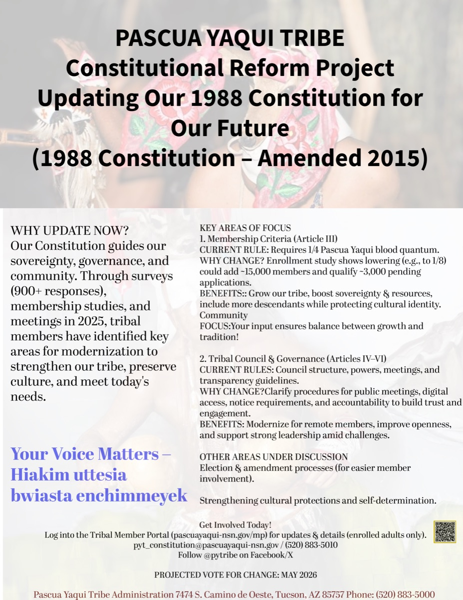

AAI Certified
Welder with field-first experience and safety discipline.
Pascua Yaqui | Guadalupe, Arizona
I am a certified welder with construction and trade project management training, and I serve on a constitutional reform committee. I focus on practical safety, tribal service, and disciplined project execution.

Welder with field-first experience and safety discipline.
Completed coursework in construction and trade management.
Active committee member supporting tribal governance work.
About Me
My work combines trade capability with organized documentation and civic responsibility. Across school papers, policy writing, and facility documentation, I focus on clarity, accountability, and real-world impact.
Featured Work
Built a full Lockout/Tagout package with procedural manuals, equipment-specific procedure sheets, posting templates, and register tracking.
Essay and report work spanning government systems, social issues, and community concerns, with emphasis on evidence-based arguments.
What I Stand For
Procedures that protect people first and hold up under real operations.
Work aligned with tribal responsibility, family values, and community trust.
Clear plans, clean documentation, and reliable follow-through.
Contact
Email: flores.dovar@gmail.com